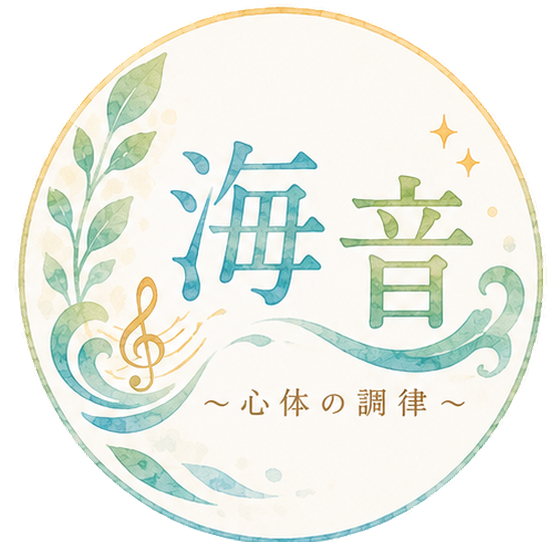

海音（かのん）〜心体の調律〜

3つの体験セッション
あなたの強みが、
未来をひらく。
生まれ持った性質や、
まだ気づいていない強み。
まずは気軽な体験から、
自分を知る時間をつくってみませんか。
体験メニューを見る
FOR YOU
こんな方におすすめです
- 自分の強みが何なのか、うまく言葉にできない
- がんばっているのに、空回りしている気がする
- 人と比べて、自信をなくしてしまうことがある
- これからの方向性を、一度立ち止まって考えたい
- 気になってはいるけれど、いきなり長いセッションを受けるのは不安
ひとつでも当てはまったら、
まずは体験から始めてみてください。
AFTER
体験のあとに
期待できること
一
自分の強みを受け取れる
画像や言葉で、自分のよさを客観的に見るきっかけになります。
二
自分の扱い方がわかる
うまくいかない理由を「自分のせい」にするのではなく、性質として理解しやすくなります。
三
次の一歩が見えてくる
これから何をしてみたいか、考えるヒントを持ち帰っていただけます。
※感じ方には個人差があります。特定の変化や結果をお約束するものではありません。
※本セッションは医療行為・診断・治療ではありません。治療が必要と考えられる場合は、医療機関の受診をおすすめしています。
FLOW
セッションの流れ
メニューを選んでお申し込み
このページの申し込みボタンから、受けたいメニューを選びます。
アンケートにご回答
お名前や生年月日など、セッションに必要なことをお聞きします。
日程を選ぶ
予約ページから、ご都合のよい日時をお選びください。
オンラインでセッション
Zoomでお話しします。静かに話せる場所をご用意ください。
PROFILE
セッションを担当するのは
海音（かのん）〜心体の調律〜
髙橋 由香
TAKAHASHI YUKA
看護師経験20年以上タマラヒーラー
看護師として20年以上、人の心と体に向き合ってきました。
いまは、予防医学や心理学、プロファイリングの考え方と、タマラヒーラーとしてのエネルギーの視点を合わせて、一人ひとりが「自分らしく動ける状態」を一緒に見つけるお手伝いをしています。
Q&A
よくあるご質問
どのメニューを選べばいいか分かりません
「迷ったら、知りたいことで選ぶ」を参考にしてください。まずは短い時間で体験したい方には、15分の強み画像セッションがおすすめです。
宗教やネットワークビジネスではありませんか？
違います。勧誘や物品購入の義務は一切ありません。
医療行為ですか？通院中でも受けられますか？
医療行為ではありません。診断や治療は行いません。通院中の方もお受けいただけますが、主治医の治療方針を優先してください。
スピリチュアルなことが苦手でも大丈夫ですか？
大丈夫です。「エネルギー」という言葉になじみがなくても、今の状態を言葉にして、次にやることを考えるという進み方は変わりません。
何を準備すればいいですか？
特にありません。静かに話せる場所と、Zoomがつながる環境だけご用意ください。
顔出しは必要ですか？
必須ではありません。ただし、プロファイリングではお顔を拝見する必要があります。
日程の変更はできますか？
1回限り可能です。前日は料金の50%、当日・無断欠席は100%の日程変更料をいただきます。受付は平日19時までです。
お申し込み
02 プロファイリング特別体験
60分・11,000円（通常120分・30,000円）
このメニューを申し込む
オンライン（Zoom）／完全予約制